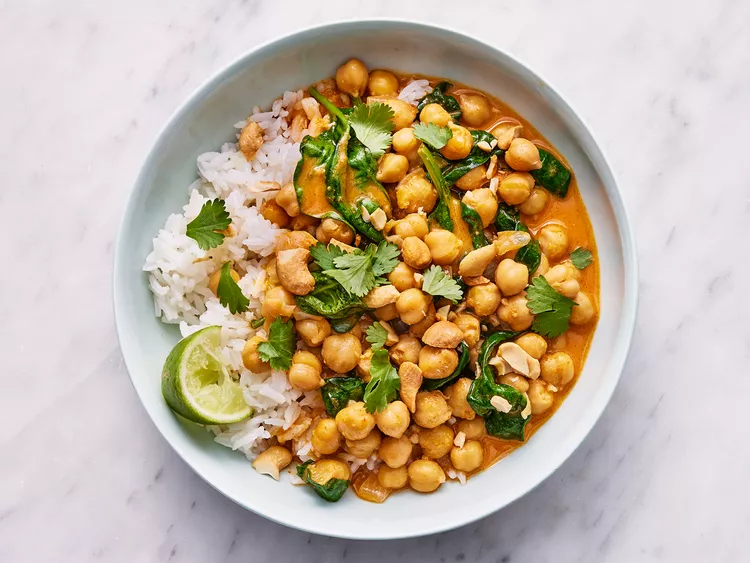

Coconut Chickpea Curry

Description
A delicious vegetarian curry that is spicy, but savory and delightful in all the best ways. You can adjust the amount of curry paste to your personal paste.
Ingredients
- 2 tablespoons grapeseed oil
- ½ cup chopped yellow onion
- 1 tablespoon minced garlic
- 1 tablespoon grated fresh ginger
- 2 tablespoons Thai red curry paste
- 1 (13.5 ounce) can unsweetened coconut milk, well-shaken (such as Thai Kitchen)
- 1 cup vegetable broth
- ½ teaspoon kosher salt
- 2 (15 ounce) cans chickpeas, rinsed and drained
- 3 cups baby spinach leaves
- 1 tablespoon fresh lime juice
- ½ cup coarsely chopped toasted cashews
- fresh cilantro for garnish
- 2 cups cooked rice
Steps
- Heat oil in a large high-sided skillet over medium. Add onion and cook, stirring often, until softened, about 4 minutes. Add garlic and ginger; cook, stirring constantly, until fragrant, about 1 minute. Add red curry paste and cook, stirring constantly, until lightly darkened and vegetables are coated, about 1 minute. Stir in coconut milk, broth, and salt; bring to a boil over medium-high. Stir in chickpeas.
- Reduce heat to medium to maintain a simmer and simmer, stirring occasionally, until thickened slightly, 15 to 20 minutes.
- Remove from heat and stir in spinach; stir until wilted, about 1 minute. Stir in lime juice. Serve with cashews, cilantro, and rice.